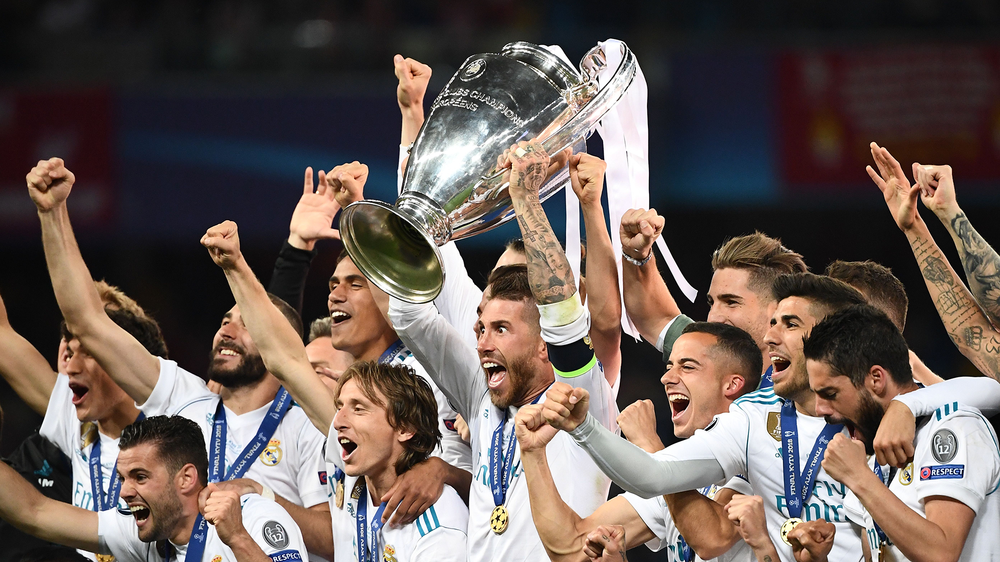

1° REAL MADRID
O clube espanhol venceu as cinco primeiras edições do torneio. Além disso, nas últimas seis temporadas, levou mais quatro títulos. No total, são 13 taças (1956, 1957, 1958, 1959, 1960, 1966, 1998, 2000, 2002, 2014, 2016, 2017 e 2018), que colocam os merengues na liderança disparada da lista dos maiores vencedores da Champions de todos os tempos.